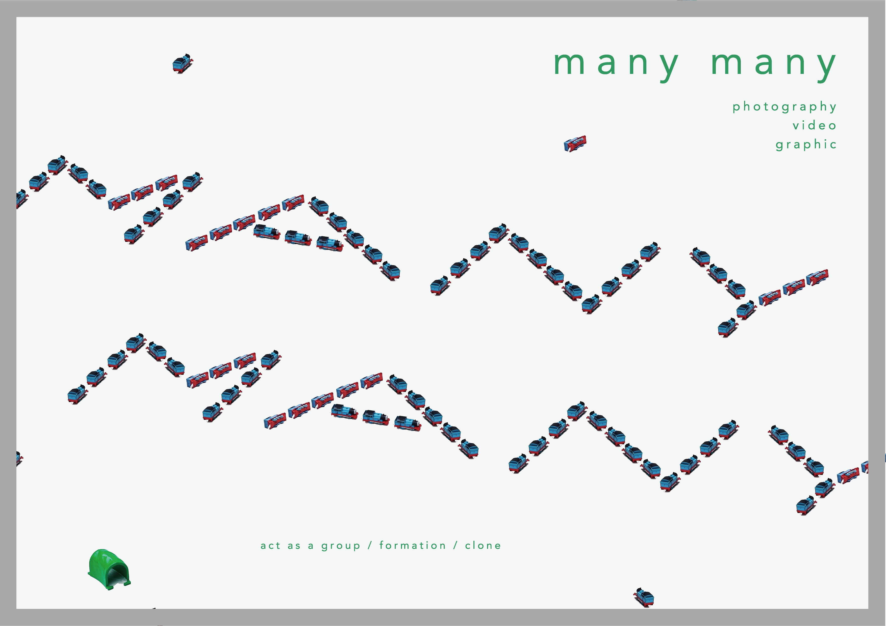
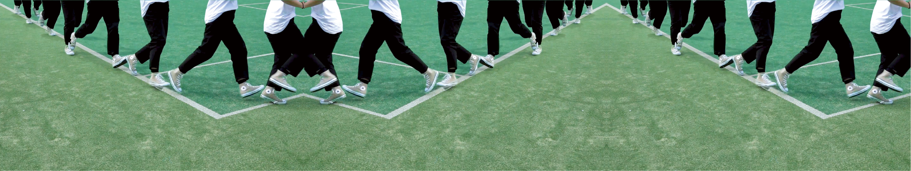
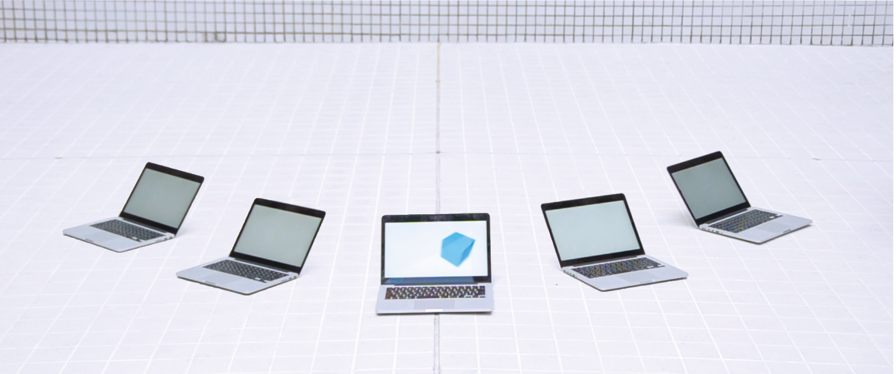
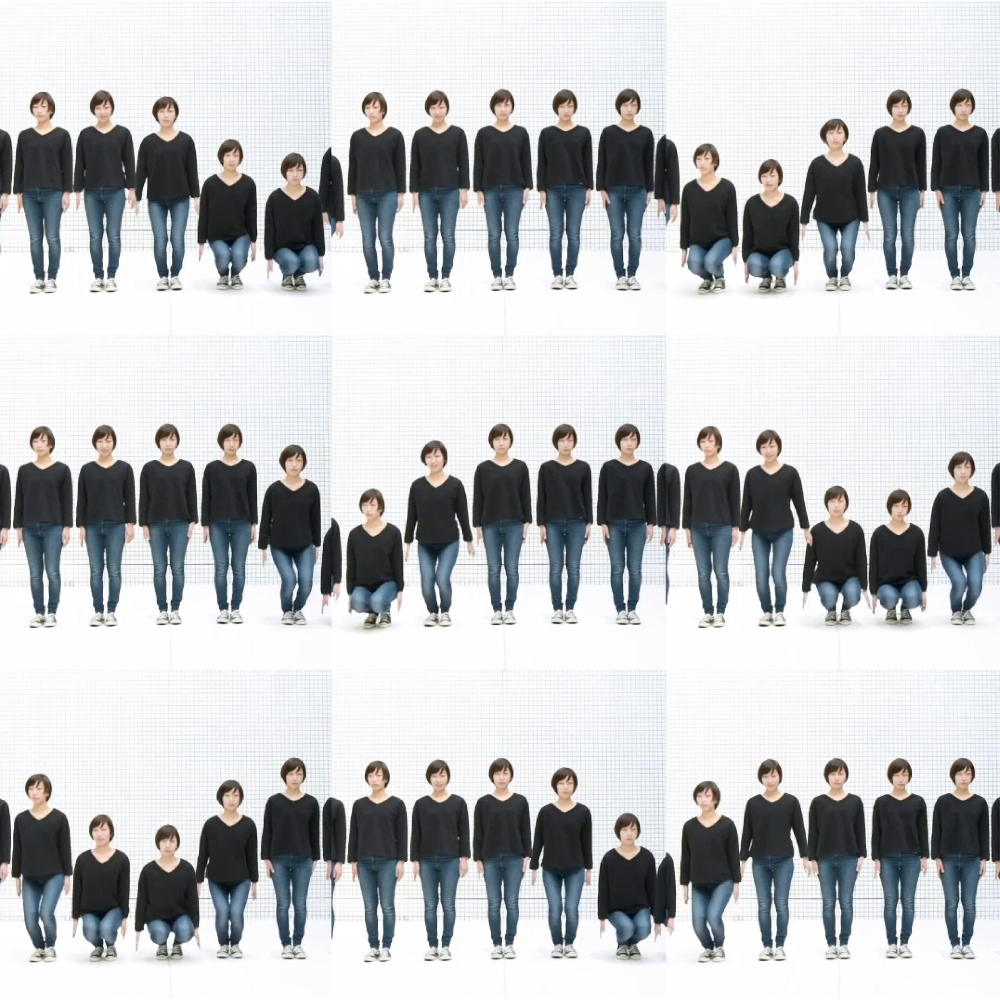
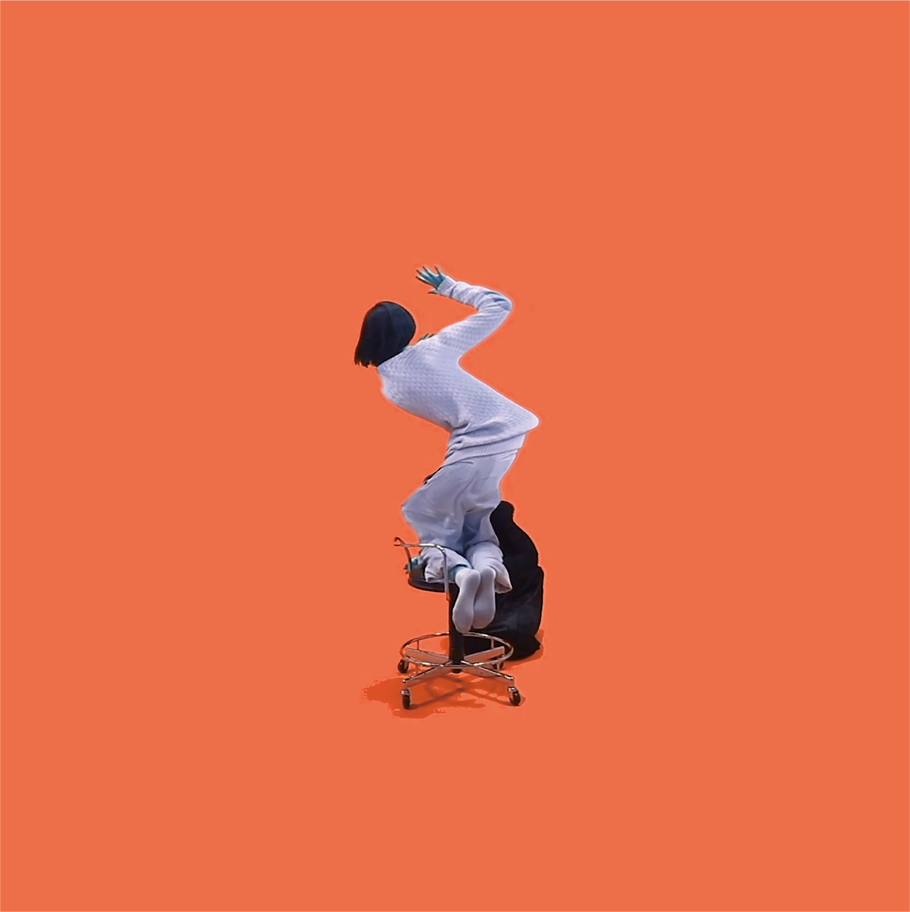

manymanyは、映像を合成し作為的に手を加え、日常の中での非日常な違和感や面白さを
映像とグラフィックで表現した作品です。
同一人物を分身させ、一人なのに集団行動やフォーメンションを組んでいるようにしたり、
を切り貼りすることで空間を歪ませたりしています。
また映像をグラフィックとしても扱えるようにするため、静止画でも画面が持つような作品になるよう心がけ、制作しました。
（マーケティングコミュニケーションデザイン課題 support : 沢田 耕一）



